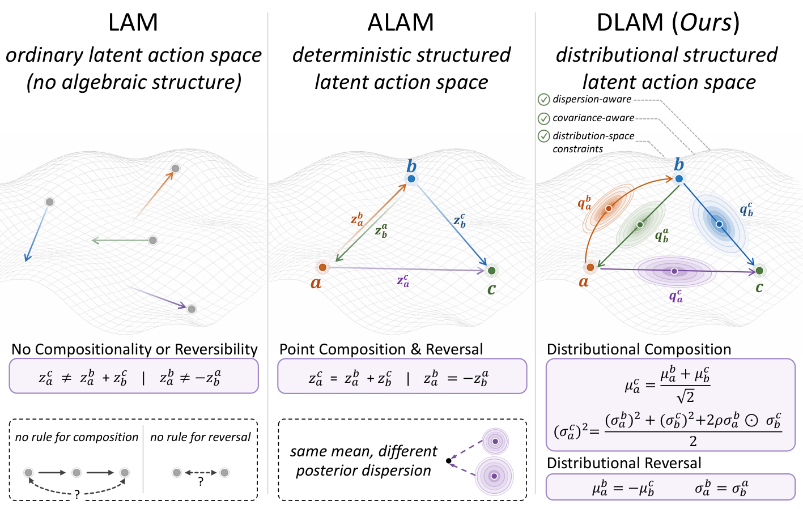
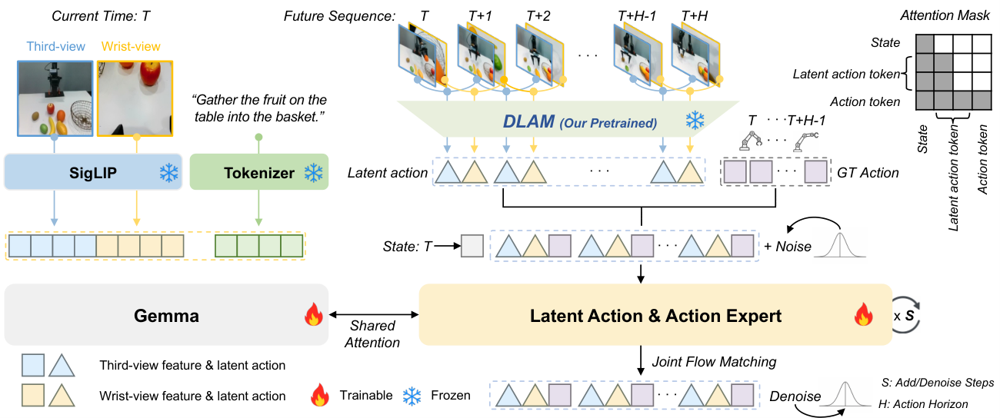
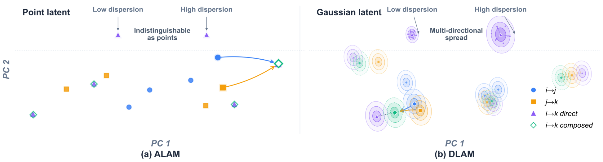
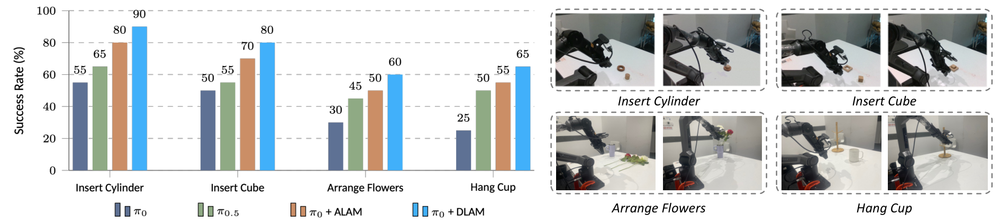

기존 LAM(Latent Action Model, 라벨 없는 영상에서 시점 간 전이(transition)를 잠재 토큰으로 학습하는 모델)은 전이를 결정론적 점(point) 하나로 표현하여 불확실성과 시간적 관계를 잃는다. DLAM은 이를 대각(diagonal) 가우시안(Gaussian) 분포로 바꾸고, 인접 전이의 합성(composition)·역방향(reversal) 제약을 평균(μ)뿐 아니라 표준편차(σ)까지 강제한다. π₀ VLA(Vision-Language-Action)에 붙였을 때 MetaWorld MT50 평균 성공률 87.6%(π₀ 단독 47.9%, ALAM+π₀ 85.0%), LIBERO 평균 99.0%(ALAM 98.1%), 실물 Piper 6-DoF 팔에서 73.8%(ALAM 63.8%, π₀ 40.0%)를 달성했다.
VLA(Vision-Language-Action, 이미지·언어·행동을 함께 다루는 정책 모델)의 병목은 행동 라벨이 붙은 로봇 데이터가 희소하다는 점이다. 반면 사람 시연·유튜브 등 행동 없는 영상(action-free video)은 풍부하다. 이를 활용하려는 접근이 LAM(Latent Action Model)이며, 인접 프레임 st→st+1의 시각적 변화를 잠재 전이 토큰(latent transition token)으로 압축해 사전학습한다.
그러나 저자들은 세 가지 한계를 지적한다: (1) 재구성(reconstruction) 손실만 쓰면 잠재가 카메라 흔들림·배경 변화 같은 제어와 무관한 신호까지 인코딩해 정책 학습에 도움이 안 된다. (2) 전이를 결정론적 점으로 두면 시연에 원래 있는 불확실성(예: 접근 각도, 파지 위치 편차)이 사라진다. (3) 앞선 ALAM(Aligned Latent Action Model)은 시간적 제약(A→C ≈ A→B→C, 순방향/역방향 관계)을 도입했으나 점 표현에만 걸어, 분산 축이 정책에 영향을 주지 못한다.
비디오 프레임 쌍 (sa, sb)이 주어지면 비주얼 토크나이저 + 트랜스포머 인코더가 K개 잠재 슬롯에 대해 [평균 μ, 로그분산 ℓ = log σ²]을 예측한다. σ = exp(ℓ/2)로 변환하며 수치 안정을 위해 ℓ은 클리핑한다. 각 슬롯은 독립 대각 가우시안이라 계산이 경량이고 확률 계산이 닫힌형(closed-form)이다. 디코더는 소스 프레임 sa와 μ만(σ는 안 씀) 받아 sb를 복원한다.
등간격 삼중점(equal-gap triplet) A, B, C(B는 A와 C의 정확한 중간 시점)에 대해 두 가지 관계를 요구한다.
(a) 정규화 합성(Normalized Composition): A→B와 B→C의 잠재 전이를 이어붙이면 A→C에 근사해야 한다. 정규화된 형태로 평균과 분산에 각각 부과:
여기서 ρ는 학습되는 스칼라 상관계수 하나로, 인접 전이가 완전히 독립(ρ=0)도 아니고 완전히 종속도 아닌 실제 관측을 반영한다. ⊙는 원소별 곱.
(b) 역방향(Reversal): 정방향과 역방향은 방향만 뒤집힌 것이므로 평균만 부호 반전, 분산은 보존:
사전학습된 인코더를 동결하고 연속 프레임에서 평균 μ만 뽑는다. π₀(PaliGemma-2B 비전-언어 백본 + Gemma-300M 액션 전문가) 위에 플로우 매칭 정책이 얹혀, μ 시퀀스와 로봇 행동 궤적을 공동 생성한다. 즉 정책이 잠재 목표 μ까지 예측하도록 학습돼, 시각 전이 예측이 행동 예측의 보조 신호가 된다.
| 모델 | Easy | Med | Hard | V-Hard | Avg |
|---|---|---|---|---|---|
| π₀ (baseline) | 71.8 | 48.2 | 41.7 | 30.0 | 47.9 |
| π₀ + ALAM | 89.3 | 83.6 | 85.0 | 82.0 | 85.0 |
| π₀ + DLAM | 90.3 | 84.8 | 84.0 | 91.3 | 87.6 |
4개 난이도 중 3개에서 최고. V-Hard(Very Hard)에서 ALAM 대비 +9.3%p로 격차가 크며, 어려운 태스크일수록 분포 표현의 이점이 드러남.
| 모델 | Spatial | Object | Goal | Long | Avg |
|---|---|---|---|---|---|
| π₀ + ALAM | 99.2 | 99.6 | 99.0 | 94.4 | 98.1 |
| π₀ + DLAM | 99.6 | 99.8 | 99.6 | 97.1 | 99.0 |
이미 포화된 벤치에서도 4개 모두 상회, 특히 장기 태스크(Long) +2.7%p.
| 모델 | 평균 성공률 |
|---|---|
| π₀ | 40.0 |
| π₀.₅ | 53.8 |
| π₀ + ALAM | 63.8 |
| π₀ + DLAM | 73.8 |
ALAM 대비 +10.0%p. 실물에선 시연 불확실성이 커서 분포 표현의 이점이 뚜렷.
| 지표 | ALAM | DLAM | 차이 |
|---|---|---|---|
| 직접 재구성 PSNR ↑ | 25.69 | 29.14 | +3.45 dB |
| 누적 재구성 PSNR ↑ | 21.23 | 22.40 | +1.17 dB |
| LPIPS 감소율 (직접) | — | −45.6% | 지각 유사도 향상 |
| LPIPS 감소율 (누적) | — | −26.1% |
직접(direct): 두 프레임 사이 단일 전이를 뽑아 바로 복원. 누적(cumulative): 여러 k-프레임 전이의 평균을 순차 합성해 복원. 후자가 시간 제약의 안정성을 테스트.
Full DLAM의 각 요소를 하나씩 끄고 재구성 품질(PSNR·SSIM·LPIPS), 시간 제약 잔차(Rμcomp: 합성 잔차, Rμrev: 역방향 잔차), 다운스트림 성공률을 측정.
| 변형 | PSNR ↑ | SSIM ↑ | LPIPS ↓ | Rμcomp ↓ | Rμrev ↓ | Success % ↑ |
|---|---|---|---|---|---|---|
| No temporal relations (재구성만) | 21.236 | 0.7894 | 0.1755 | 1.2071 | 1.0314 | 76.6 |
| Matched mean-only (σ=1, ρ=0) | 22.109 | 0.8057 | 0.1644 | 1.1808 | 1.0371 | 82.1 |
| Learned variance (ρ=0) | 22.084 | 0.8067 | 0.1637 | 1.1777 | 1.0341 | 85.3 |
| Full DLAM | 22.400 | 0.8086 | 0.1623 | 1.1662 | 1.0010 | 87.6 |




아직 추가 질문이 없습니다. 이 논문에 대해 더 궁금한 점을 물어보시면 답변을 여기에 정리해 추가합니다.